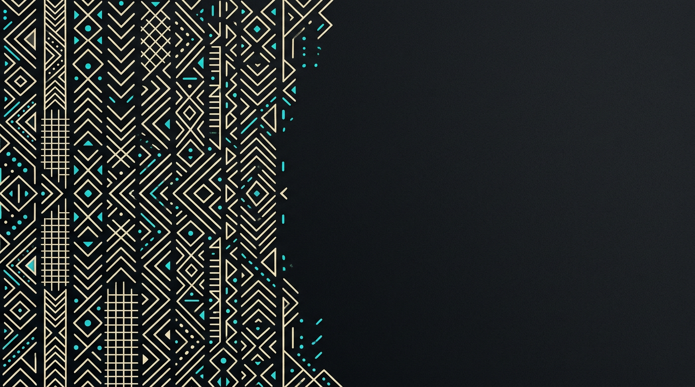
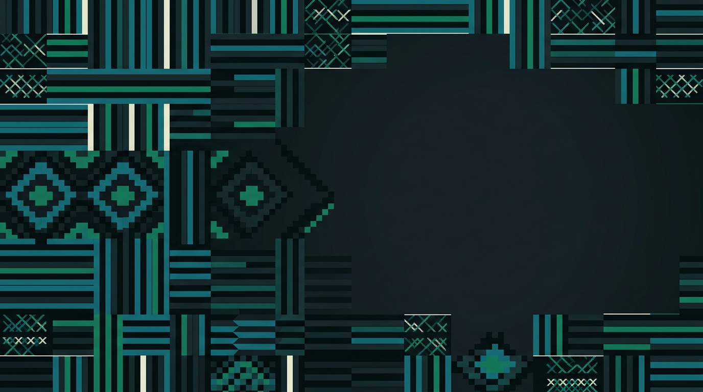
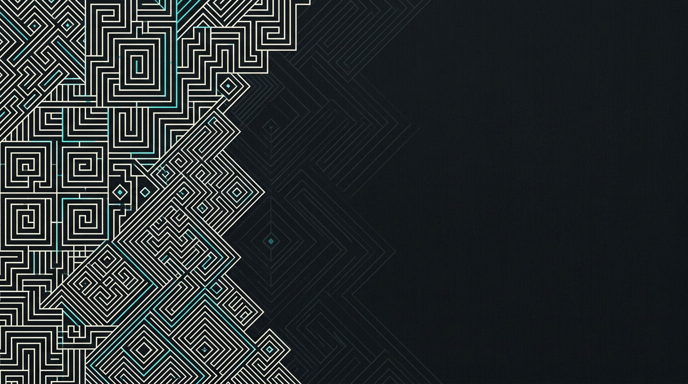

A · Sahelian geometry
Mud-cloth-inspired chevrons, diamonds, grids, and cyan signal marks.

kabila
// security portal · identity gateway
Verify every identity. Protect every decision.
Secure verification operations for teams that need clear evidence, accountable review, and a complete audit trail.
Self-hosted by default: data stays in your instance.
background ● activekabila / auth gateway
Best balance of identity, contrast, and form legibility.01 / SAHELIAN GEOMETRY
B · Woven crosshatch
Woven banding, horizontal rhythm, grid crossings, and stepped diamond blocks.

kabila
// security portal · identity gateway
Verify every identity. Protect every decision.
Secure verification operations for teams that need clear evidence, accountable review, and a complete audit trail.
Self-hosted by default: data stays in your instance.
background ● activekabila / auth gateway
Most energetic option; use if the brand should feel more woven and expressive.02 / WOVEN CROSSHATCH
C · Stepped raffia
Angular maze lines, nested blocks, and architectural stepped geometry.

kabila
// security portal · identity gateway
Verify every identity. Protect every decision.
Secure verification operations for teams that need clear evidence, accountable review, and a complete audit trail.
Self-hosted by default: data stays in your instance.
background ● activekabila / auth gateway
Strongest visual signature; more premium and architectural than the other two.03 / STEPPED RAFFIA
iRecommendation: choose Option A for the initial Kabila implementation. It is closest to the existing mockup, leaves the most controlled negative space, and remains readable on smaller screens. These are generated visual directions only; we should do a cultural/design review before production branding.